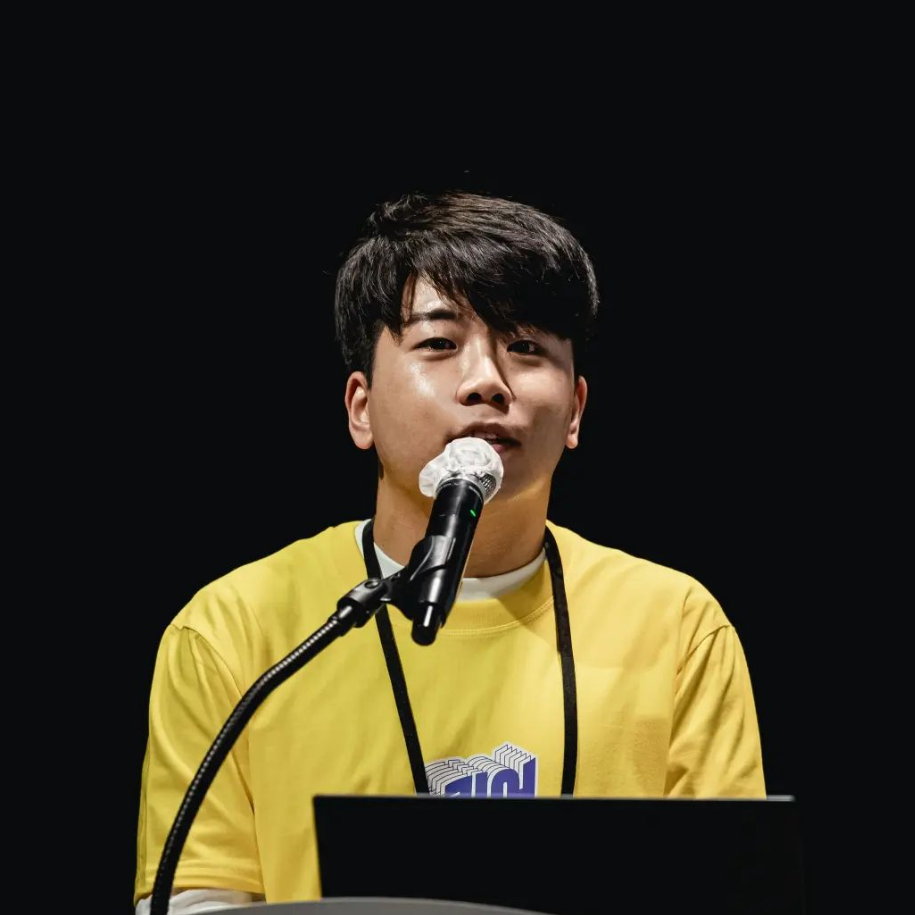

Seong-Jo Jeong
I study LGBTQ social movements, gender, and sexuality in South Korea. My research moves across three areas: the history of the Korean LGBTQ movement and its anti-discrimination politics; health inequalities and violence faced by sexual and gender minorities; and meta-research on queer studies as an academic field. Alongside, I practice public sociology, translating research into essays, reports, and public talks.
한국의 성소수자 운동, 젠더, 섹슈얼리티를 연구합니다. 한국 성소수자 운동의 역사와 반차별 정치, 다양한 영역에서의 차별과 폭력이 만드는 건강 불평등, 한국 성소수자/퀴어 연구라는 학문 분야에 대한 메타 연구까지 세 영역에서 작업하고 있습니다. 연구를 에세이와 리포트, 강연으로 풀어 학계 바깥과 나누고 실질적인 변화를 만들기 위해 노력하고 있습니다.
Queer Democracy — Movement & Politics
How LGBTQ activists in South Korea build coalitions and reshape democratic life. My dissertation traces the movement's history and its struggle against discrimination, linking movement formation to the politics of solidarity and anti-discrimination law.
Projects & publications→Health, Discrimination & Inequality
Quantitative and mixed-methods studies of discrimination and inequality. For sexual and gender minorities, I trace coming out, minority stress, and mental health. More broadly, I also examine sexual violence and discrimination at work and in institutions.
Projects & publications→Queer Studies as a Field
Meta-research on queer studies in South Korea, documenting its bibliographic record, examining researchers' working conditions, and studying the institutional infrastructure (IRB, research governance) that shapes what can be studied and by whom.
Projects & publications→